| Страны мечты | ||||
|---|---|---|---|---|
| Страны в которых хочу побыват, поесть и полюбоватся видами | ||||
| Страны | Канада | Италия | Исландия | Греция |
| Флаг | 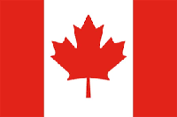 | 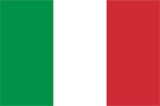 | 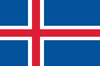 | 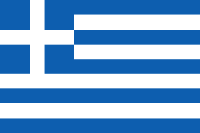 |
| Герб | 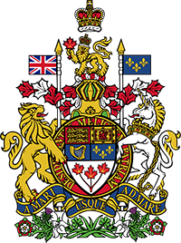 |  |
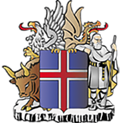 | 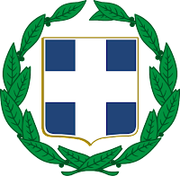 |
| Национальные животные | 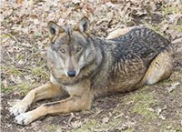 | 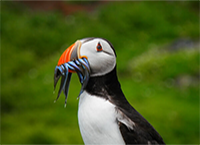 | 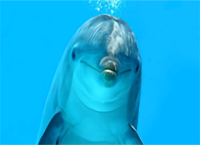 | |
| Столица | Оттава | Рим | Рейкьявик | Афины |
| Краткое описание |
Канада — государство в Северной Америке,
крупнейшее по площади на этом континенте.
Крупнейшие города Торонто, Монреаль, Ванкувер, Калгари, Эдмонтон Территория — 9 984 670 км² (2-я в мире) |
Италия — государство в Южной Европе, в центре Средиземноморья.
Входит в Европейский союз и НАТО с момента их создания,
является третьей по величине экономикой еврозоны.
Крупнейшие города — Рим, Милан, Неаполь, Турин, Палермо, Генуя, Венеция... Территория — 302 073 км² (71-я в мире) |
Исландия — островное государство, расположенное на западе
Северной Европы в северной части Атлантического океана.
Крупнейшие города — Рейкьявик, Коупавогюр, Хабнарфьордюр, Акюрейри. Территория — 103 125 км² (106-я в мире) |
Гре́ция — государство в Южной Европе, на границе с Малой Азией.
Унитарная, парламентская республика. Подразделяется на 13 периферий.
Крупнейшие города — Афины, Салоники, Патры, Ираклион, Лариса Территория — 131 957 км² (95-я в мире) |
| Источники достопримечательностей | 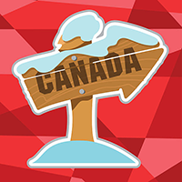 | 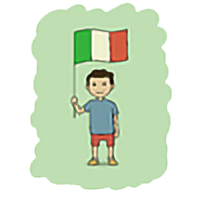 | ||
| Страны | Канада | Италия | Исландия | Греция |